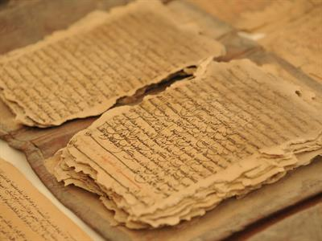
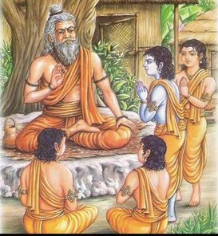

Scopul educației
Principalul obiectiv al educației a fost de a dota elevii cu o bună calitate a educației.
Educația sa concentrat în cea mai mare parte pe îmbogățirea culturii, caracterului și personalității, dezvoltarea și cultivarea
idealurilor nobile. Obiectivul a fost dobândirea personalității mentale, fizice și intelectuale a elevilor, pentru a-i pregăti pentru viitor și a supraviețui în orice situație.
Caracteristicile educației
În perioada antică, guvernul de stat și poporul nu s-au amestecat în proiectarea curriculum-ului, plata taxelor, reglementarea orelor de predare. A existat o legătură puternică între profesor și elev. Fiecare elev a fost repartizat cu un profesor și s-a acordat mai mult accent relației elev-profesor, fiecare elev obișnuia să se întâlnească personal cu profesorii pentru a învăța și a obține instrucțiuni de la ei.
În cele mai vechi timpuri, familiile regale, precum și regii statelor, obișnuiau să-și doneze averea pentru a îmbunătăți sistemul de învățământ și calitatea. Programa a fost concepută în conformitate cu cerințele acelei epoci. În acea perioadă, studenții obișnuiau să-și părăsească casele și mergeau să locuiască cu guru-urile lor până la finalizarea educației. În timpul perioadei vedice timpurii, educației femeilor i s-a acordat, de asemenea, mai mult accent. Educația se concentrează pe dezvoltarea fizică și psihică a elevilor. Durata cursului a fost de aproximativ 10-12 ani,
deoarece nu existau cărți, așa că studenții obișnuiau să memoreze toate lucrurile, memoria a jucat un rol crucial în timpul învățării.
Educația a fost predată în păduri departe de orașe și popoare pentru a oferi studenților un mediu de studiu plăcut și tăcut.
Curriculum

Curriculum-ul joacă un rol esențial în sistemul de învățământ.
Era dinamic și nu static; a fost alcătuit din diferite etape.
Scopul fundamental al construirii unui curriculum bun a fost dezvoltarea fizică și psihică a elevilor.
Curriculumul constă din patru Vede, șase vedanga, Upnishade, darshanas, Puranas, Tarka Shastra.
Cele șase vedanga erau Shiksha, Chhandas, Vyakarana, Nirukta, Jyotisha și Kalpa, în timp ce darshana erau Nyaya,
Baiseshika, Yoga, Vedanta, Sankhya, Mimasa. Algebrei, geometriei și gramaticii au primit, de asemenea, mai multă
importanță în acel moment. Panini era faimos în domeniul gramaticii la acea vreme. Curriculum-ul sistemului budist constă
din pitakas, Abhidharma și sutre. Pe lângă acest medicament, Vedelor li sa acordat și importanță. Învățarea hindusă a
fost o parte a învățării budiste, deși s-a acordat mai mult accent învățării budiste. Ambele sisteme mergeau mână în mână
în acel moment. Educația a fost în totalitate prin orale și dezbateri, iar examenele au fost susținute în fiecare an.
Sistemul de învățământ al perioadei antice s-a concentrat pe subiecte precum război, armată, politică, religie.
Metode de învățare

Profesorii de la acea vreme acordau o atenție deosebită studenților lor și îi predau în funcție de nivelul lor de
cunoștințe și abilități. Predarea s-a desfășurat în principal prin orale și dezbateri, iar diferitele metode au fost următoarele:
- Pe atunci cărțile nu existau, așa că elevii aveau obiceiul să învețe și să memoreze toate lucrurile predate în clasă, iar profesorii îi ajutau și la memorare.
- Elevii obișnuiau să se scufunde profund în conceptele predate de profesorii lor și să exploreze noi metode de a le învăța.
- Ascultarea, contemplarea și contemplarea concentrată au fost câteva metode noi de explorare a modului de învățare.
- Profesorii au folosit metodele de povestire pentru a preda elevii.
- Elevii obișnuiau să pună întrebări despre subiectele predate de profesori și aceste subiecte erau discutate și apoi răspunse elevilor.
- Educația din acea vreme se concentra în principal pe cunoașterea practică a subiectelor predate în clasă.
- Studenții au dobândit multe cunoștințe prin seminarii și dezbateri desfășurate la intervale frecvente.
Institutii de invatamant
Gurukul a fost orașul natal al profesorilor, unde elevii vin după finalizarea ceremoniei de inițiere și învață până la
finalizarea studiilor. Parohiadele sau academiile erau locurile de învățământ superior și de învățământ unde studenții învață
prin discuții și dezbateri. Goshti sau conferințele erau locurile în care regii statelor obișnuiau să invite savanți din fiecare
institut să se întâlnească și să facă schimb de opinii. Ashramas sau schituri erau celelalte centre de învățare în care studenții
din diferite părți ale țării obișnuiau să vină și să învețe de la sfinți și înțelepți. Vidyapeeth a fost locul de învățare spirituală
fondat de marele Acharya, Sri Shankara în locuri precum Sringeri, Kanchi, Dwarka și Puri etc. Agraharas era o instituție a brahmanilor în satele în care predau. Viharas-urile
erau instituțiile de învățământ înființate de budiști în care studenții erau predate disciplinele legate de budism și filozofie.
Institutii de invatamant superior
Takshashila sau Taxila: Takshashila a fost faimosul centru de învățare, inclusiv religia și predarea budismului în timpurile străvechi.
A fost renumit pentru învățământul său superior, care cuprindea subiecte precum scripturile antice, drept, medicină, sociologie, astronomie,
stiinta militara, si 18 silpas etc. Cunoscutii savanti de la universitate erau un mare gramatician Panini, el era expert in
subiectul său de gramatică și și-a publicat lucrarea despre Ashtadhyayi,
Chanakya, care este priceput în domeniul guvernării, a studiat ambele aici. Studenți din Kashi, Kosala, Magadha și, de asemenea, din diferite țări
a ajuns la universitate în ciuda unei călătorii lungi și anevoioase. Takshashila a fost un oraș antic indian situat în prezent în
nord-vestul Pakistanului a fost binecunoscutul centru de învățare și a fost declarat sit arheologic și patrimoniu mondial
de Organizația Națiunilor Unite pentru Educație, Știință și Cultură (UNESCO) în 1980.
Nalanda: Când Xuan Zang a venit în Nalanda, se numea Nala, care era centrul de învățare în multe materii.
Studenții veneau aici din diferite părți ale țării și din lume pentru a studia aici. Subiecte diferite au fost
a predat, inclusiv Vedele, arte plastice, medicină, matematică și astronomie. Xuan Zang însuși a devenit studentul
Yogashastra. Nalanda, care se află în prezent în Rajgir, Bihar, India, a fost, de asemenea, declarată ca sit al patrimoniului mondial de către
UNESCO. Celelalte institute celebre din vremuri străvechi au fost Vallabhi, Vikramshila, Ujjain și Benaras.
Avantaje
- Sistemul se concentrează pe dezvoltarea completă a studenților.
- S-a acordat mai mult accent pe cunoștințele practice decât pe cunoștințele teoretice.
- Elevii nu s-au implicat doar în aducerea gradelor, ci principalul lor accent a fost pe cunoștințe.
- Sălile de clasă erau păduri încorporate care oferă elevilor un mediu plăcut de studiu.
- Nu au fost exercitate presiuni asupra studenților legate de studii pentru ca aceștia să învețe eficient.
- Guvernul nu a intervenit în formarea curriculumului, regii de la acea vreme au ajutat la dezvoltarea educației.
Dezavantaje
- Femeile nu au fost admise la Gurukuls.
- A existat discriminare de castă, deoarece numai Kshatriya era permisă, Eklavya nu a primit admiterea la Gurukul.